Understanding Multicast ASM in a Service Provider Lab
PIM-SM, ASM, dynamic RP with BSR, RPF logic, MRIB verification, and multicast tree building.
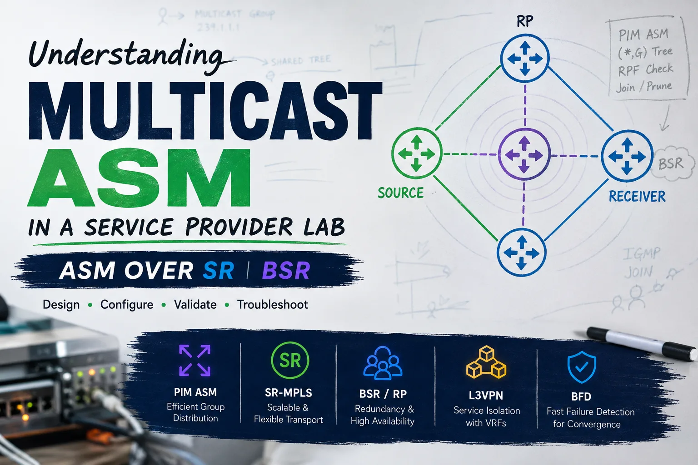
Quick Mental Model
ASM Starts With Interest
The receiver joins the group first. That join is what starts the tree.
Receiver -> Join
RP Is the Anchor
The shared tree is built toward the Rendezvous Point learned through BSR.
Tree -> RP
RPF Picks the Path
The multicast path follows the unicast route back toward the RP.
RPF = unicast logic
DR Sends the Join
The receiver-side DR decides which router sends the upstream PIM Join.
DR matters
Lab Objective
Today I focused on truly understanding how multicast (PIM-SM / ASM) behaves in a Service Provider backbone.
No MVPN yet. The goal was to visualize the control plane and the multicast tree end-to-end.
Current study topology: A dual-stack Service Provider lab running IS-IS, Segment Routing (SR-MPLS), L3VPN, Internet VRFs, and Multicast ASM using PIM with dynamic RP via BSR.
The design also includes PCE, TI-LFA for fast reroute, and BFD for rapid failure detection.
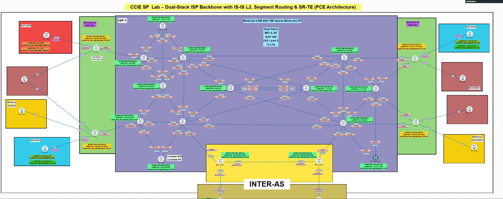
1. Core Foundation
- IS-IS provides full reachability, including reachability to the RP.
- PIM Sparse Mode is enabled across the backbone.
- PIM neighbor relationships are verified before building multicast state.
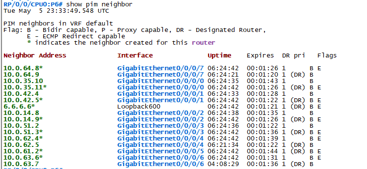
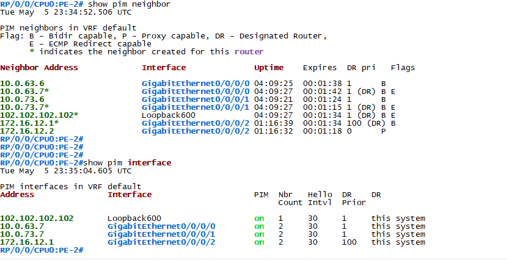
2. Dynamic RP Using BSR
A router was configured as Candidate BSR and Candidate RP. The multicast group scope was limited to 239.0.0.0/8. The important result was that the RP was learned dynamically through BSR, without static RP configuration.
show pim bsr election
show pim rp mapping
show pim group-map
show pim range-list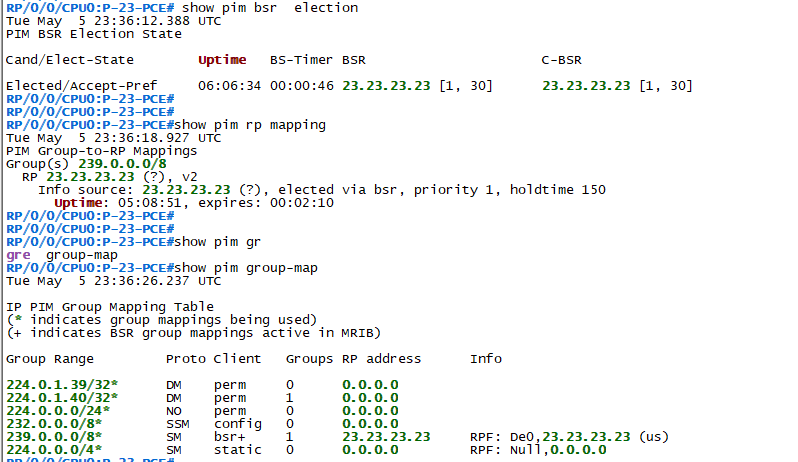
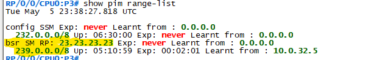
3. Receiver Simulation
A multicast receiver was simulated from the edge using IGMP join-group for 239.1.1.1. This allowed the multicast tree to be triggered from the receiver side.
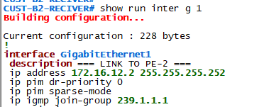
4. Critical Detail: DR Election
Initially, the CE became the Designated Router, so no PIM Join was sent upstream by the expected Last Hop Router. The fix was to adjust the PIM DR priority so the PE acts as the Last Hop Router.
This was the turning point of the lab.
5. Building the Multicast Tree (*,G)
The multicast tree was validated hop by hop. Each router receives a Join from downstream, calculates the RPF path toward the RP, and sends the Join upstream. This is where the multicast path becomes visible.
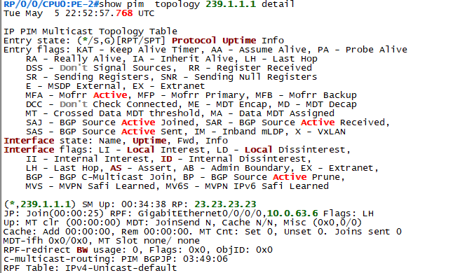
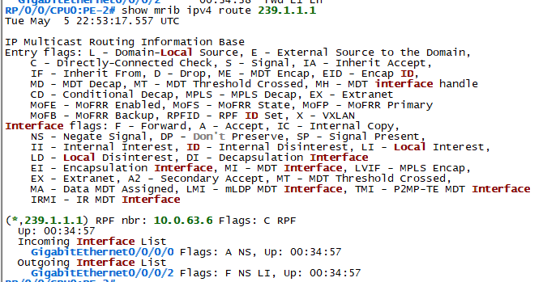
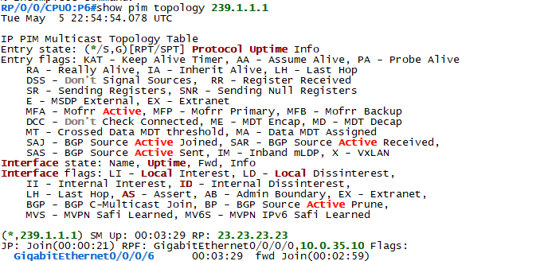
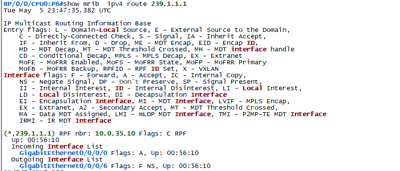
6. Real Path Observed
The path observed was:
Multicast state exists only on routers that participate in the tree. Routers outside the RPF path do not maintain multicast state for this group.
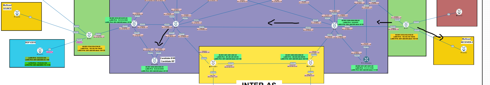
Key Takeaways
- Multicast is not flooding. It follows the unicast RPF path.
- Trees are built from receiver to RP.
- DR election matters more than most people think.
- MRIB is critical for understanding forwarding decisions.
- Only routers in the multicast path maintain multicast state.
Next Step
The next step is to introduce a multicast source, observe PIM Register, validate (S,G) state, analyze SPT switchover, and then move into MVPN multicast over MPLS/VPN.
Troubleshooting Notes
show pim neighbor
show pim interface
show pim topology 239.1.1.1
show mrib route 239.1.1.1
show pim rp mapping- Always confirm IGP reachability to the RP before troubleshooting PIM state.
- Validate PIM neighbors first; multicast state will not build correctly without stable adjacencies.
- Check the DR election on receiver-facing segments. The wrong DR can prevent the expected upstream Join.
- Use MRIB to understand the actual forwarding decision, not only the PIM topology table.
- If the tree is not forming, follow the RPF path hop by hop toward the RP.
Final Study Notes
This lab helped me connect the multicast control plane with the unicast routing table. The key lesson was that multicast forwarding is not random and it is not simple flooding. It is built around deterministic RPF decisions.
Once the receiver joined the group, the tree formed hop by hop toward the RP. Seeing the Join messages, MRIB entries, and PIM topology align across the path made the behavior much easier to understand.
The moment everything clicked was realizing that multicast is not about interfaces. It is about deterministic paths dictated by the IGP and RPF. Once I followed the receiver-to-RP path hop by hop, the topology stopped being a diagram and became a system.
Comments & Discussion
If this lab helped you, or if you have feedback, questions, or another way to troubleshoot multicast ASM, feel free to leave a comment below.